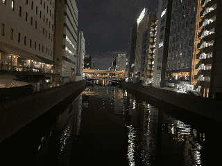

Hello! Welcome to the lartunet, Lartu's corner of the internet. Here you'll find information about games and software I've worked on. Me? I make videogames and other code stuff. I love food and rainy days. Thank you for stopping by!
You may be interested in the videogames I've worked on, or the programming languages I've developed. Or maybe my other projects.
I can also offer you my List of Cool Links and Books. Or you can just browse and see what you find. If I have any thoughts I'd like to share, I'll post them here.
To navigate this website, use the arrows above to turn to the next page, visit the Table of Contents or check the Log of Changes.

The source code for this website can be found here. It's generated using Makompile.
The lartunet is part of the LOW TECH WEBRING! Although the webring is retired and no longer updated, you can continue exploring the pages that comprised it using that link. It was a webring for homepages of people interested in low tech, small game tools, and other forms of Web 1.0 inspired creativity. It was created by Em, who started it because they were inspired by Olia Lialina's work documenting Geocities communities, Kris De Decker's work at LOW←TECH Magazine, and their own internet childhood. I like to keep this brief summary here as a testament of what it was.
If you want to create your own webring (and maybe invite me to join), you can do so with onionring.js, which is one of the most popular webring solutions out there, and is certainly low-tech.